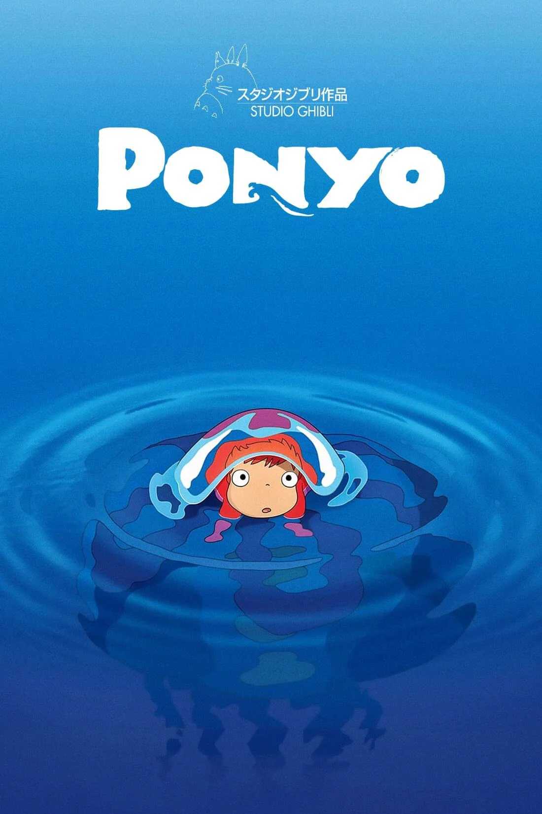

Entra nel magico mondo di STUDIO GHIBLI, lo studio cinematografico fondato a Tokyo nel 1985 da Hayao Miyazaky. Fatti trasportare dalle dolci melodie delle colonne sonore composte da Joe Hisaishi, mentre scopri trame e curiosità sui film.
Mamoru nasce nel 1950 nel cuore del Giappone e da subito si avvicina alla musica. Dopo la pubblicazione del suo primo album nel 1981, crea il suo nome d'arte Joe Hisaishi e decide di dedicare gran parte della sua carriera ala scrittura di colonne sonore per produzioni animate. Più tardi Hisaishi fa la conoscenza di Miyazaki e i due collaborano alla creazione di oltre 10 film. Le musiche di Hisaishi sono considerabili vere e proprie opere d'arte perchè in grado di dare una tonalità emotiva alle scene che accompagnano, mettendo in risalto gli stati d'animo dei protagonisti e transporando lo spettatore nel mondo fantastico di Studio Ghibli.
Trama
La giovane Sophie lavora senza sosta nella boutique di cappelli che, prima di morire, apparteneva a suo padre. Durante una delle sue uscite incontra l'affascinante stregone Howl in fuga dagli scagnognozzi della strega delle Lande. Quest'ultima fraintende la relazione tra i due protagonisti e lancia su Sophie una maledizione che la trasforma in una vecchia signora. La giovane, presa dallo sconforto, intraprende un viaggio solitario che legherà per sempre il suo destino ad Howl.
Curiosità -Howl no Ugoku Shiro Soundtrack (風立ちぬ サウンドトラック)- Il lungometraggio del Castello errante di Howl è basato sull'omonimo romanzo scritto da Diana Wynne Jones nel 1986. Le animazioni, composte da 1400 disegni, sono realizzate a mano con colori acrilici e poi scannerizzate per applicare alcuni dei più moderni effetti digitali. Sembra che Hayao Miyazaki abbia preso ispirazione per le architetture del Castello Errante di Howl da quelle presenti nella realtà a Strasburgo, dove il regista è rimasto incantato dai suoi mercatini di Natale, e nelle cittadine di Colmar e Riquewihr, nella vicina Alsazia. La dimora di Howl, ad esempio, è stata ispirata invece dalle opere dell’illustratore francese Albert Robida, i cui disegni erano caratterizzati da raffigurazioni di oggetti dal sapore visionario e futuristico. Le colonne sonore di Hisaishi permettono anche ai meno appassionati di riconoscere i temi generali di romanticismo e fantasia che caratterizzano il film, solo con l’uso di particolari tecniche, toni e strumenti musicali.
Trama
Kiki è una giovane strega che al suo tredicesimo compleanno, come impone la tradizione, deve partire alla ricerca di una città in cui svolgere un apprendistato per dimostrarsi capace di essere indipendente. In compagnia del suo gatto nero Jiji e a cavallo della sua scopa arriva nella citta dei suoi sogni accanto al mare, nella quale troverà non poche difficoltà.
Curiosità -Majo no Takkyūbin Santora Ongaku-shū (魔女の宅急便 サントラ音楽集)- Joe Hisaishi volle dare alla colonna sonora un'impronta maggiormente europea, ispirandosi alla musica occidentale per lo stile e gli strumenti utilizzati (come ad esempio la fisarmonica). Il film offre anche molti silenzi che consentono allo spettatore di interpretare liberamente l'umore delle scene, che tuttavia furono in gran parte cancellati nella versione inglese del 1997, riempiti da Paul Chihara che era responsabile dell'adattamento della musica, per raggiungere meglio il pubblico americano. Per Kiki consegne a domicilio furono usate 67,317 tavole da disegno e 462 colori. Nel 1989 viene pubblicato il film. Non tutti sanno che è tratto da un libro giapponese per bambini dell’autrice contemporanea Eiko Kadono. "Kiki consegne a domicilio" diventa il primo vero successo nazionale dello Studio Ghibli, stabilendo un record di spettatori e incassi in Giappone nel 1989.

Trama
Sosuke, un bambino di cinque anni vive in cima ad una scogliera. Una mattina giocando in spiaggia trova Ponyo, una pesciolina rossa con la testa incastrata in un barattolo. Sosuke le salva la vita e da quel momento tra i due nasce un forte legame. Ponyo inizia a desiderare di essere umana, ma suo padre , uno stregone che abita i fondali marini, cerca in tutti i modi di riportala a casa.
Curiosità -Ake no Ue no Ponyo (崖の上のポニョ Ponyo sulla scogliera)- è un brano musicale del gruppo folk Fujioka Fujimaki e cantato da Nozomi Ōhashi, utilizzato come colonna sonora del film. Il singolo è stato pubblicato il 5 dicembre 2007 ed è arrivato alla quarta posizione della classifica Oricon dei singoli più venduti in Giappone vendendo 382,000 copie. Il brano è stato scritto dal compositore Joe Hisaishi. Quando Hisaishi originariamente vide lo storyboard del film, ebbe immediatamente l'idea della melodia del brano. Ma dal momento che la melodia sembrava troppo semplice, non ne fece menzione con i suoi collaboratori per circa tre mesi. Alla fine, non riuscendo a togliersi la melodia dalla testa ,la fece sentire a Miyazaki e al produttore che trovarono il brano ideale per il film. Non tanti sanno che Miyazaki ha disegnato personalmente le onde del mare perché secondo lui erano le vere protagoniste del lungometraggio.
Trama
La famiglia di Chihiro, una bambina di 10 anni, è viaggio verso la nuova città dove abiteranno; durante il percorso, il papà sbaglia strada e si trova all'imbocco di un tunnel che sbuca su una vallata su alcune case. Incuriositi, il papà e la mamma si addentrano alla scoperta del posto in cui sono capitati, contro il parere di Chihiro, che ha un brutto presentimento.
Arrivano in una città piena di ristoranti nella quale si siedono a mangiare, mentre chihiro si allontana diffidente. Al suo ritorno trova i genitori trasformati in maiali e si rende conto di non poter tornare alla macchina.
Lavorando nella città incantata, Chihiro incontra creature fantastiche e magiche, e proprio lei che è una ragazzina capricciosa e viziata, imparerà il valore dell'amore, dell'amicizia e della solidarietà, affrontando come un'adulta le difficoltà e le scelte che le si presenteranno, cercando di tornare a casa senza dimenticare chi è.
Curiosità -Miyazaki's Spirited Away- è la colonna sonora composta e arrangiata da Joe Hisaishi per il film d'animazione “La città incantata” (千と千尋の神隠し Sen to Chihiro no kamikakushi). I brani sono stati orchestrati dalla New Japan Philharmonic, la colonna sonora è stata giudicata ottima dal critico cinematografico Paolo Mereghetti nel suo Dizionario dei film, inoltre ha ricevuto diversi premi e riconoscimenti in patria: tra cui il Mainichi Film Competition Award per la miglior musica; il Tokyo International Anime Fair Award per la miglior musica nella categoria cinema; e nel 2002 il Japan Gold Disc Award per l'album d'animazione dell’anno. Tra tutte le canzoni del film, sicuramente quella che rimane più impressa allo spettatore, è il tema principale del film: Itsumo nando demo ("Sempre con me”). La storia dietro alla canzone è molto lunga e travagliata ed inizia la cantante del film, Yumi Kimura, che dopo aver visto il lungometraggio “ la principessa Mononoke” ne rimase così colpita da scrivere una lettera ad Hayao Miyazaki. Il maestro stesso le rispose, scrivendole del nuovo progetto che aveva in mente, ovvero “Rin the chimney painter”, una delle prime versioni de La città incantata. La storia colpì molto la cantante, che chiamò il suo paroliere Wakako Kaku per scrivere una canzone ispirata al film, e la inviarono allo Studio Ghibli.
Trama
È la storia di Ashitaka, un guerriero Emishi, e della maledizione caduta su di lui dopo che ha salvato il suo villaggio dalla furia di Nume cinghiale, impazzito dall’ira. Destinato a morte certa, il giovane abbandona il villaggio per evitare che il maleficio ricada su tutti gli abitanti. Durante il suo viaggio per liberarsi dalla maledizione, si ritroverà immischiato in una guerra tra umani e divinità. È qui che incontrerà le due acerrime nemiche Eboshi, la padrona della città del ferro, e San, la principessa spettro. L’umana che cerca di distruggere il bosco delle divinità e la ragazza lupo che cerca di contrastarla.
Curiosità -Mononoke Hime Soundtrack (もののけ姫 サウンドトラック)- La parola Mononoke che compare nel titolo può essere tradotto in “spirito vendicativo”, dando al nome del film il significato di “principessa degli spiriti vendicativi”.
La colonna che accompagna la scena iniziale con il contrasto delle note basse dei fiati e le note alte, quasi stridenti dei violini trasmette un senso del pericolo imminente, mentre le percussioni rimbombanti rendono il tutto più frenetico e movimentato.
Quasi tutti i brani inseriti nel lungometraggio sono in versione strumentale, fanno eccezione solo “Tatara Fumu Onnatachi” e “Mononoke Hime”. La delicatezza di questultimo ( la principessa spettro)esprime a pieno i sentimenti d’amore provati dall’animo del giovane Ashitaka, ma è poco noto che inizialmente fu realizzata la sola versione strumentale. Miyazaki, infatti, non aveva previsto per Principessa Mononoke una versione cantata del brano di Hisaishi, ma un giorno durante un viaggio in macchina aveva ascoltato alla radio la voce di un controtenore (Yoshikazu Mera) e ne era rimasto profondamente colpito.
THE GHIBLI Journey è stato sviluppato da Penelope e Francesca, due studentesse della facoltà di scienze della Comunicazione dell'università Alma Mater di Bologna.
In Italiano "Ghibli Journey" si traduce in "il viaggio attraverso Ghibli". L'idea dietro al sito è quella di accompagnare l'utente attraverso un percorso audiovisivo lungo i principali film dell'omonima casa di produzione.
Tramite il collegamento diretto con Spotify l'utente può ascoltare le colonne sonore che hanno dato vita agli scenari surreali dentro ai quali si viene catapuntati durante la visione delle animazioni.